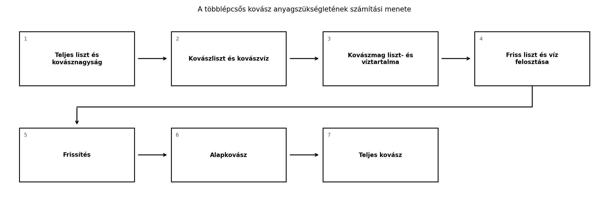

Hajnali három óra van. A pékségben azt a rozskenyeret kell legyártani, amelyhez a technológiai lap 40 %-os kovászt ír elő. A kovászos edényben ott a tegnap esti kovászmag, a lisztes kamrában mérleg és lisztes zsákok, a vízcsapon csak hideg víz van. A péknek most pontosan tudnia kell, hogy a teljes lisztmennyiségből mennyit kell a kovászba adnia, mennyi vizet mérjen hozzá, és mennyi kovászmagot használjon ahhoz, hogy a kovász érettsége és sűrűsége a terv szerinti legyen. Ha rossz a számítás, a kovász túl híg vagy túl kemény lesz, a kenyér savassága és térfogata eltér, a későbbi anyagnorma-számítás pedig felborul. Ezért a kovászszámítás nem „irodai feladat”, hanem a gyártás első mérhető lépése.
A kovász lényegében egy érlelt előtészta. Három fő tömegkomponense van: a kovászban lévő liszt, a kovászban lévő víz és a kovászmaggal bevitt érett kovász, amely maga is lisztből és vízből áll. A számítások mindig ezeket a komponenseket követik nyomon.
A következő ábra azt a gondolatmenetet mutatja, amelyet a többlépcsős kovász anyagszükségletének kiszámításakor érdemes követni.

A számítás során először a teljes lisztből indulunk ki, abból meghatározzuk a kovászliszt tömegét, majd a kovászsűrűségből a kovász teljes víztömegét. Ezután levonjuk a kovászmaggal bevitt lisztet és vizet, így megkapjuk a frissen beadagolandó liszt és víz mennyiségét.
Definíció: kovásznagyság. A kovásznagyság azt fejezi ki, hogy a kovászba kerülő liszt mennyisége hány százaléka a termékhez felhasznált teljes lisztmennyiségnek. A teljes liszt mennyiségét (kg), a kovászba kerülő liszt tömegét (kg), a kovásznagyságot (%) jelöli:
A lisztre vetített százalék rendszerében a teljes liszt a 100 %-os alap, tehát a 40 %-os kovász azt jelenti, hogy a teljes liszt 40 %-át a kovászba mérjük.
Definíció: kovászsűrűség (kovász-TA). A kovászsűrűség – a hazai üzemi szóhasználatban gyakran kovász-TA – a kovász liszt- és víztömegének aránya a kovász lisztjére vetítve. Képlettel, ha a kovászban lévő víz tömege (kg):
A kovász sűrűsége tehát mindig nagyobb 100-nál, mert a víz növeli a tömegét. A 180-as kovász-TA azt jelenti, hogy 100 kg kovászlisztre 80 kg víz jut, tehát a kovász tömege 180 kg.
Szabály. A kovász vízmennyiségét a kovászliszt tömegéből és a kovász-TA-ból a következő képlettel számítjuk:
Ennek oka, hogy a képletét átrendezve:
amiből vonjuk ki a kovászliszt tömegét.
Definíció: kovászmag. A kovászmag a már megérett, előző kovászból visszatartott kovászrész, amelyet az új kovász oltására használunk. A kovászmag is lisztet és vizet tartalmaz, ezért a kovász anyagszükségletének számításakor a kovászmag liszt- és víztartalmát le kell vonni a frissen beadagolandó lisztből és vízből.
Ha a kovászmagot a kovászliszt százalékában adjuk meg, akkor a kovászmagban lévő liszt tömege:
ahol a kovászmag lisztben kifejezett aránya a kovászlisztre vetítve (%). A kovászmag tényleges tömegét a mag sűrűségéből számoljuk:
A kovászmag víztartalma pedig:
Továbbvitt eredmény. A kovásznagyság és a kovász-TA számítását használjuk a Péksütemény-kovászok és előtészták, a rozskovász gyakorlata alfejezetben a konkrét kovászvezetéshez, a Anyagnorma, rendelésből anyagszükséglet és dagasztásonkénti anyagmennyiség alfejezetben a kenyérgyártás anyagszükségletéhez, valamint a Rozsos kenyér és rozskenyér és a Kuglófok és a kovásszal készült kevert kuglóf termékek technológiájához.
A kovász vezetése akkor biztonságos, ha minden tételről tudjuk, hogy mikor készült, milyen lisztből, milyen arányokkal, milyen hőmérsékleten és milyen eredménnyel. A kovászolási napló a gyártási dokumentáció része, egyben a HACCP-rendszerben a kovászérés folyamatának igazolása.
Egy kovászolási napló legalább a következőket tartalmazza:
Higiénia. A kovászolási napló kitöltése előtt a dolgozó tiszta munkaruhát, hajhálót visel, kezet mos, és a kovászos edények, mérlegek, hőmérők tisztaságát ellenőrzi. A kovászmagot tiszta edényből, saját eszközzel kell kivenni, hogy ne kerüljön bele idegenanyag vagy más tészta.
HACCP. A kovászolás során a kritikus tényezők közé tartozik a kovászmag mikrobiológiai állapota, a bekeverés hőmérséklete és az érlelési idő. A naplóban rögzített hőmérsékletnek és időnek az üzemi HACCP-tervben rögzített tartományban kell lennie. Ha a kovász hőmérséklete túl alacsony, az érés elhúzódik; ha túl magas, túlsavanyodás vagy nemkívánatos mikrobák szaporodhatnak. A konkrét határértékek üzemenként és kovásztípusonként eltérnek (ellenőrizendő: az adott pékség HACCP-terve és a technológiai lap).
Egy búzakenyérhez 250 kg lisztet használunk. A technológiai lap szerint a kovásznagyság 30 %, a kovász TA-ja 180.
Adott: , , .
Keresett: kovászliszt, kovászvíz, kovásztömeg.
Számítás:
A kovász össztömege:
Ellenőrzés: a kovász TA-ja visszaszámolva:
Az eredmény nagyságrendileg helyes: 250 kg lisztből 30 %-os kovásznál 75 kg kovászliszt várható. ∎
Egy rozskenyérhez a teljes liszt 200 kg, a kovásznagyság 40 %, a kovász TA-ja 185. A kovászmagot a kovászliszt 20 %-ában adjuk meg (lisztben kifejezve). A kovászmag TA-ja 200.
Adott: , , , , .
Keresett: kovászliszt, kovászvíz, kovászmag tömege, a frissen bemérendő liszt és víz.
Számítás lépésenként:
Ellenőrzés: a kovász összetevőinek összege: , ami megegyezik a kovász lisztjének és vizének összegével: . A kovász TA-ja: . ∎
A rozskenyérhez 150 kg teljes lisztet használunk, a kovásznagyság 40 %, a kovász TA-ja 180 minden lépésben. A kovászmag lisztben kifejezett aránya 10 % a kovászlisztre, a mag TA-ja 180. A friss lisztet és vizet három lépésben adjuk a kovászhoz: frissítés 20 %, alapkovász 30 %, teljes kovász 50 %.
Adott: , , , , , a friss liszt lépésenkénti aránya 20 %, 30 %, 50 %.
Keresett: az egyes lépésekben bemérendő friss liszt és víz, valamint a kovászmaggal bevitt liszt és víz.
Számítás lépésenként:
A friss víz felosztása ugyanilyen arányban, mert a TA minden lépésben 180, tehát a friss víz a friss liszt 80 %-a:
A vízösszeg ellenőrzése: , ami megegyezik a korábbi értékkel.
A lépések ellenőrzése:
A frissítés után a kovász lisztje:
Víztartalma:
TA-ja:
Az alapkovászban a friss liszt és víz hozzáadása után a kovász lisztje , vize , TA-ja szintén 180. A teljes kovászban a liszt , a víz , TA-ja 180. ∎
A lépésenkénti anyagmérleget a következő oszlopdiagram mutatja: minden oszlop alján ugyanaz a kovászmag (6 kg liszt + 4,8 kg víz) áll, fölötte az előző lépésekből átvitt friss anyag, legfelül az adott lépésben bemért friss liszt és víz (a 8. számítási lépés értékei). Az oszlopok tetején a halmozott liszt és víz, valamint a TA látható, amely mindhárom lépésben 180.
A diagramról két tipikus hiba is leolvasható: ha a mag lisztjét és vizét elfelejtjük levonni, minden oszlop a sötét réteggel magasabb lesz (a kovász tömege és a kovásznagyság a tervezettnél nagyobb lesz, a TA pedig csak akkor változik, ha a mag TA-ja eltér a kovászétól); ha pedig a kovászvizet nem vonjuk le a dagasztóvízből, a tészta túl lágy lesz (lásd a következő szakaszt). A HTML-változat kalkulátorában a teljes liszt, a kovásznagyság, a kovász- és a mag-TA, a magarány, a lépésszám és a lépésarányok állíthatók; a kalkulátor lépésenkénti bemérési listát, a dagasztólisztet és a dagasztóvizet is kiszámolja, és figyelmeztet, ha a lépésarányok összege nem 100 %.
A kovászszámításnak akkor van igazi haszna, ha a kovászban lévő vizet beleszámítjuk a tészta teljes vízmennyiségébe. A dagasztásnál ugyanis a tésztakészítéshez felhasznált összes víz egy része már a kovászban van. Ha a tészta receptje például 60 % lisztre vetített vizet ír elő, akkor a dagasztóvíz:
Ha ezt elmulasztjuk, a tészta túl lágy lesz, mert a kovászvíz kétszeresen kerül beszámításra. Ezt a gondolatot a Tésztahőmérséklet és dagasztóvíz számítása alfejezetben is használjuk.
Példa. Az első példában 250 kg liszthez 30 %-os kovász tartozott, 60 kg kovászvízzel. Ha a teljes tészta előírt vízmennyisége lisztre vetítve 64 %, akkor az összes víz:
A dagasztóvíz:
Egy kisüzemi pékségben a pék rozskenyeret készített, és a kovászolási naplóban szereplő kovásznagyságot 40 %-nak írta be. A kovászhoz azonban a kovászmag lisztjét nem számolta hozzá a kovászliszthez, csak a frissen bemért lisztet vette figyelembe. Ezért a tényleges kovásznagyság 44 % lett a 40 % helyett. A kovász savanyúbbá vált, a kenyér savanykásabb, tömörebb bélű lett, a későbbi tételeknél pedig a receptben szereplő 40 %-os kovász nem egyezett a napló tényleges értékével. A tanulság: a kovásznagyság számításakor a kovászmaggal bevitt lisztet is a kovászliszthez kell számítani, és ezt a naplóban egyértelműen fel kell tüntetni.
Cél: a kovász anyagszükségletének kiszámítása, a bemért anyagok pontos kimérése és a kovászolási napló szakszerű kitöltése.
Eszközök és anyagok: hitelesített mérleg, kovászos edény, hőmérő (lehetőleg szúrópróba esetén higiénikusan tisztítható), keverőlapát vagy dagasztóeszköz, kovászmag, liszt, víz, kovászolási napló, toll.
Higiénia. Kezdés előtt a dolgozó tiszta munkaruhát és hajhálót visel, ékszert nem visel, kezét alaposan megmossa. A kovászos edények, a mérleg tányérja és a hőmérő élelmiszerrel érintkező része tiszta és lehetőleg fertőtlenített legyen. A kovászmagot csak tiszta eszközzel vegyük ki, hogy ne szennyezzük idegen anyaggal.
Gépbiztonság. A mérleg nem gép a szokásos értelemben, de ha a kovászt gépi dagasztóval keverjük, a dagasztógépet csak betanítás után, felügyelettel szabad kezelni. A keverés közben a gép fedelét, védőrácsát nem szabad megkerülni. Tisztítás előtt a gépet le kell állítani, áramtalanítani, és meg kell várni, amíg a forgó részek teljesen megállnak.
Lépések:
Dokumentálás. A kovászolási naplót úgy kell vezetni, hogy abból a kovász útja visszakövethető legyen. A bemért liszt- és vízmennyiségek, a kovászmag azonosítója, a hőmérséklet és az érlelési idő együtt hitelesítik a kovász minőségét. A naplót a gyártás végén ellenőrizni kell, és a HACCP-rendszer szerint megőrizni.
Az alábbi táblázat egy háromlépcsős rozskovász anyagszükségletét foglalja össze 150 kg teljes lisztre, 40 %-os kovásznagyságra, 180-as kovász-TA-ra. A kovászmag 10 % a kovászlisztre, mag-TA 180. A friss liszt és víz lépésenkénti aránya 20 %, 30 %, 50 %.
| Nyersanyag / lépés | A kovászlisztre (60 kg) vetített % | Mennyiség (kg) | Megjegyzés |
|---|---|---|---|
| Kovászmag | 18,0 | 10,80 | mag liszt 6,0 kg, mag víz 4,8 kg (TA 180) |
| Frissítés: friss liszt | 18,0 | 10,80 | |
| Frissítés: víz | 14,4 | 8,64 | |
| Alapkovász: friss liszt | 27,0 | 16,20 | |
| Alapkovász: víz | 21,6 | 12,96 | |
| Teljes kovász: friss liszt | 45,0 | 27,00 | |
| Teljes kovász: víz | 36,0 | 21,60 | |
| Összesen | 108,00 | 60 kg liszt (a 150 kg teljes liszt 40%-a) + 48 kg víz, TA 180 |
Ellenőrzés: a lisztek összege , a vizeké ; .
Műveleti paraméterek (tanulási példa, ellenőrizendő: üzemi technológiai lap).
| Lépcső | TA | Hőmérséklet | Érlelési idő |
|---|---|---|---|
| Frissítés | 180 | 24–26 °C | 6–8 óra |
| Alapkovász | 180 | 23–26 °C | 8–12 óra |
| Teljes kovász | 180 | 26–30 °C | 3–5 óra |
Allergének. Rozsliszt (glutént tartalmazó gabona); a mag és a kovászedény is gluténos, a „gluténmentes” termékkel közös eszköz nem használható.
HACCP/minőségi pontok. Kovászmag állapota (illat, megjelenés, nincs penész), hőmérséklet, idő, érettség (térfogat, pH/savfok), napló vezetése; a kovászedény és a mérőeszközök tisztasága. A kovász érettsége minőségi, a sütés a CCP (lásd a HACCP-fejezet).
Megjegyzés. Az itt szereplő számok tanulási példák; az üzemi technológiai lap és a HACCP-terv ettől eltérhet. A táblázatban a százalékoszlop a kovászlisztre vetített arányt mutatja az adott lépésben, nem a teljes kenyérlisztre vetítve.
A kovász minőségét az érettség jelei és a mérhető paraméterek együtt jellemzik. A jó kovász:
A kovász dokumentálásakor a naplóban szereplő adatokból ellenőrizhető, hogy a bemért anyagok és a paraméterek a terv szerint alakultak-e. A minőségeltérés okát mindig rögzíteni kell, és a kovászt csak akkor szabad felhasználni, ha a hibát ki tudjuk zárni.
Hiba 1: a kovásznagyságot a tészta lisztjéhez, nem a teljes liszthez vetítik. Ha a kovászlisztet a dagasztó lisztből vonják ki, azaz a kovásznál figyelembe vett lisztet leválasztják a teljes lisztből, az könnyen téves arányt ad. Ok: a „teljes liszt” fogalma tisztázatlan. A helyes gyakorlat: a teljes liszt a termék receptúrájának összes lisztmennyisége, a kovászliszt pedig annak százaléka.
Hiba 2: a kovászmag liszt- és víztartalmát nem vonják le. Így a kovász tömege és a kovásznagyság nagyobb lesz a tervezettnél; a TA csak akkor változik, ha a mag TA-ja eltér a kovászétól (hígabb mag → hígabb kovász). A helyes megoldás: mindig a mag lisztjével csökkentjük a friss lisztet, a mag vizével a friss vizet.
Hiba 3: a TA-ból a vizet rosszul számolják. A TA 180 azt jelenti, hogy 100 kg lisztre 80 kg víz jut – nem 180 kg víz, és nem a kovász össztömegének 80%-a víz (pl. 135 kg kovászból nem 108 kg a víz). Helyesen: ; .
Hiba 4: a kovász vízét nem vonják le a dagasztóvízből. A tészta túl lágy lesz, később nehéz formázni, a kenyér szétterül. A helyes gyakorlat: a dagasztóvíz = az összes előírt víz mínusz a kovászban lévő víz.
Hiba 5: a kovászolási napló hiányos vagy utólag töltik ki. Ha nincs dokumentálva a hőmérséklet vagy az idő, egy esetleges minőségi hiba utólag nem elemezhető, és a HACCP-ellenőrzés is kifogásolja. A helyes gyakorlat: minden lépésnél azonnal, olvashatóan beírni az adatokat.
Egy teljes kiőrlésű kenyérhez 180 kg lisztet használunk. A technológia szerint a kovásznagyság 45 %. Számítsd ki a kovászliszt tömegét!
A kovászliszt 60 kg, a kovász TA-ja 170. Mennyi vizet kell a kovászhoz mérni?
Egy rozskenyérhez 240 kg lisztet használunk, a kovásznagyság 35 %, a kovász TA-ja 185. A kovászmag aránya 15 % a kovászlisztre, a mag TA-ja 200. Számítsd ki a kovászlisztet, a kovász összes vizét, a kovászmag tömegét, a frissen bemérendő lisztet és vizet.
Egy háromlépcsős kovászhoz a teljes liszt 120 kg, a kovásznagyság 40 %, a kovász TA-ja 180 minden lépésben. A kovászmag 10 % a kovászlisztre, mag-TA 180. A friss liszt és víz lépésenkénti aránya: 20 %, 30 %, 50 %. Számítsd ki mindhárom lépésben a bemérendő friss lisztet és vizet, és ellenőrizd a végső kovász TA-ját!
A pék a kovászolási naplót tölti. A technológiai lap szerint a kovásznagyságnak 30 %-nak kell lennie. A teljes liszt 300 kg, a kovász TA-ja 180. A pék a kovászhoz 105 kg lisztet és 84 kg vizet mér ki. Mi a hiba? Mennyi lisztet és vizet kellett volna kimérnie a kovászhoz, ha nincs kovászmag, és mi a helyes kovászliszt?
A gyakorlatban mérd ki egy kovász hozzávalóit a fenti 5. feladat adataival: a teljes liszt 300 kg, a kovásznagyság 30 %, a kovász TA-ja 180. Nincs kovászmag. Használd a mérleget és hőmérőt: írd le a mérés lépéseit, és tölts ki egy egyszerű naplósort a bekeverés után (dátum, kovászliszt, kovászvíz, TA, hőmérséklet). Ha a bekeverés után 28 °C-ot mérsz, jó-e ez a kovászhoz? Válaszodban jelöld, hogy a pontos célérték a technológiai lapról olvasandó.
Adott:
,
.
Keresett:
.
Ellenőrzés: 180 kg 45 %-a 81 kg, nagyságrendileg helyes. ∎
Adott:
,
.
Keresett:
.
Ellenőrzés: a kovász tömege 60 + 42 = 102 kg, a TA . ∎
Adott: , , , , .
Ellenőrzés: a kovász összetevői: , ami megegyezik a kovászliszt + kovászvíz összegével: . ∎
Adott: , , , , , lépésarányok 20 %, 30 %, 50 %.
Ellenőrzés: a végső kovász lisztje: ; vize: ; TA-ja . ∎
Helyes kovászliszt: ; víz: . A pék 105 kg lisztet mért (), a víz 84 kg , tehát a TA (180) helyes, de a kovásznagyság 5 százalékponttal nagyobb: a kovász savanyúbb lesz, és a dagasztólisztet is rosszul számolják (195 kg helyett 210 kg kell). Helyesen: 90 kg liszt, 72 kg víz.
Mérési lépések: (1) a tárát lemérjük; (2) 90,0 kg kovászlisztet mérünk be; (3) 72,0 kg vizet mérünk be a számított hőmérséklettel; (4) a keveréket csomómentesre keverjük, letakarjuk; (5) a hőmérsékletet szúrószondás hőmérővel mérjük. Példa naplósor: „2026-…; rozskovász; kovászliszt 90,0 kg; kovászvíz 72,0 kg; TA 180; 28 °C; kezdés 20:00; aláírás”. A 28 °C a rozskovász tanulási példájában a teljes kovász lépcsőjének tartományában (26–30 °C) lehetséges célérték; a pontos cél a technológiai lapról olvasandó (ellenőrizendő: üzemi technológiai lap).
A kovászszámítás során mindig a teljes lisztből indulunk ki. A kovásznagyság () a kovászliszt tömegét a teljes liszt százalékában adja meg: . A kovászsűrűség (kovász-TA) a kovász liszt- és víztömegének aránya a kovászlisztre vetítve: . Ebből a kovászvíz . Ha kovászmagot használunk, a mag liszt- és víztartalmát le kell vonni a frissen bemérendő lisztből és vízből. Többlépcsős kovásznál a friss lisztet és vizet lépésenként osztjuk el, és minden lépésben ellenőrizzük a TA-t. A kovászvíz a tészta összes vizének része, ezért a dagasztóvízből levonandó. A kovászolási napló legalább a dátumot, a lépést, a bemért mennyiségeket, a TA-t, a hőmérsékletet, az érlelési időt és az érettség jelét tartalmazza; ez a HACCP-dokumentáció része. A helyes számítás a kenyérgyártási anyagnormák, a rozskenyér és a kuglóf készítésének alapja.